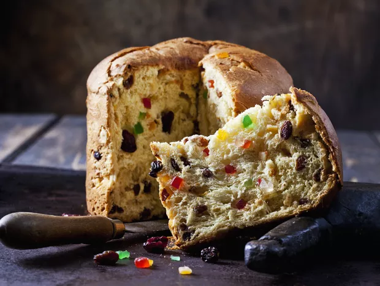

Panetone
Ingredientes
1 kg e 1/2 de farinha de trigo ou um pouco mais
100 g de fermento biológico
9 claras em neve
9 gemas ligeiramente batidas (ovos grandes)
150 g de margarina com sal derretido (morninha) para a massa
250 g de margarina com sal na temperatura ambiente para folhar
2 xícaras de chá de açúcar
1 copo e 1/2 americano de leite morno
1 colher de sopa de sal
1 colher de sopa de essência de panetone ou baunilha
1 colher de sopa de essência de laranja
1 xícara de chá de água morna
600 g frutas cristalizadas picadas
250 g de uvas passas sem caroço
Obs (caso queria fazer chocotone substituir as frutas e uvas por 850 g de gotas de chocolate)
3 formas de panetone de 1 kg ou 6 formas de 500 g não é necessário untar
Obs: É necessária uma bacia grande
Modo de Preparo
Em uma vasilha ou bacia dissolver o fermento com a água morna, 1 colher de sopa de açúcar e 6 colheres de sopa de farinha. Misturar bem e deixar dobrar de volume mais ou menos 10 minutos
Enquanto cresce bater as claras em neve numa bacia média, bem firmes
Adicionar as gemas, 2 xícaras de açúcar, misturar bem e então adicionar o fermento da vasilha, a manteiga derretida, o sal, o leite morno, as essências, misturar muito bem
Deixar descansar 15 minutos, adicionar então a farinha e amassar bem, a massa fica um pouco pegajosa, deixar descansar por 10 minutos;
Enfarinhar uma mesa não muito pequena, abrir a massa com rolo, enfarinhando pra não grudar na mesa ou no rolo
Passar a manteiga na massa aberta para folhar, espalhar as frutas e as uvas passas
Enrolar como rocambole, abrir com o rolo, passar manteiga novamente, dobrar em 3
Abrir novamente com o rolo, e fazer um rocambole, dividir em 3 partes se for de um 1 kg a forma ou em 6 partes de for de 500 g
Colocar nas formas, deixar crescer 70 minutos
Assar em forno médio por cerca de 50 minutos e quando já estiver morno colocar em sacos plásticos
Obs: As formas com as massas crescidas devem ser colocadas, em formas de alumínio para serem levadas ao forno para assar